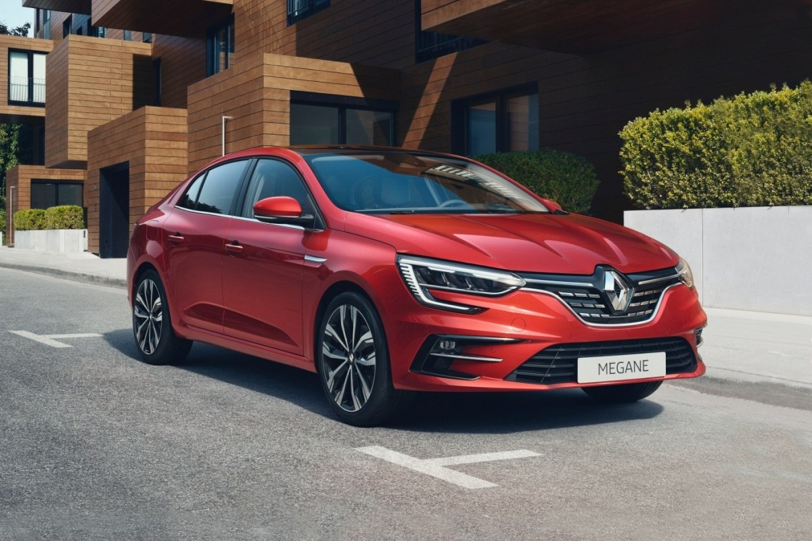

Renault Megane: Стиль, Надійність і Інновації в Одному Автомобілі
Renault Megane — це одна з найвідоміших моделей французького автовиробника, що завоювала серця водіїв у всьому світі. Від моменту свого першого випуску в 1995 році, Megane продовжує вражати поєднанням стилю, технічних інновацій і надійності. У цій статті ми розглянемо основні переваги, що роблять Renault Megane одним із лідерів свого класу.
Стильний Дизайн Renault завжди славився своїм особливим підходом до дизайну, і Megane не є винятком. Сучасні версії автомобіля мають елегантний та динамічний зовнішній вигляд, який чудово поєднується з футуристичними елементами. Великі передні фари, агресивна решітка радіатора та плавні лінії кузова створюють відчуття руху навіть коли автомобіль стоїть на місці.
Надійність та Безпека Renault Megane завжди відзначався високим рівнем безпеки, отримуючи п’ятизіркові оцінки в краш-тестах Euro NCAP. Це досягається завдяки сучасним технологіям, серед яких адаптивний круїз-контроль, система екстреного гальмування, контроль "сліпих зон" та камера заднього виду. Також Megane оснащений міцною конструкцією кузова, що забезпечує додатковий рівень захисту в разі ДТП.
2024